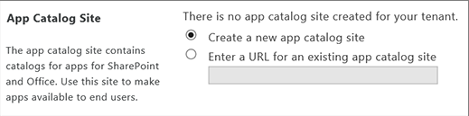
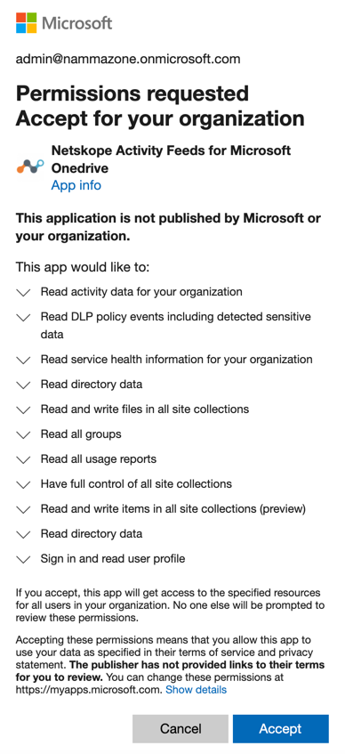

Configure Microsoft Office 365 OneDrive for API-enabled Protection
API-enabled Protection API Connectors
Netskope API-enabled Protection works by directly connecting to the cloud app using the APIs published by the app, and uses OAuth to gain delegated access to the app.
Netskope's API-enabled Protection provides a complementary deployment model to provide cloud visibility, policy, and data security services by directly connecting to the cloud service using the APIs published by the cloud services. The API Connector works in conjunction with the Netskope cloud proxy to provide defense-in-depth security services. The API Connector is only available for data security related services such as DLP, Active Encryption, and Active Permissions Management.
 |
To use API-enabled Protection with Microsoft Office 365 OneDrive, first you need to connect Netskope to your Microsoft Office 365 OneDrive app with APIs. The following sections explain how the API connectors work and how to configure the connection.
Supported Microsoft Office 365 Licenses for API-enabled Protection
Netskope requires a minimum set of Office 365 licenses to integrate with your Office 365 environment. For user licenses, Netskope currently supports one of the following service plans:
Dynamics 365 Customer Engagement Plan Enterprise Edition
Dynamics 365 For Customer Service Enterprise Edition
Dynamics 365 For Sales And Customer Service Enterprise Edition
Dynamics 365 For Sales Enterprise Edition
Dynamics 365 For Team Members Enterprise Edition
Microsoft 365 A3, A5 for Faculty, Students
Microsoft 365 Business Basic, Standard, Premium
Microsoft 365 E3, E5, F1, F3
Office 365 A5 for Faculty, Students
Office 365 E1, E2, E3, E4, E5
Office 365 E3 Developer
Office 365 Enterprise E5 Without Audio Conferencing
Office 365 F1, F3
Office 365 Midsize Business, ProPlus, Business, Business Essentials, Premium
Office 365 Enterprise E3 Developer
OneDrive For Business (plan 1), (plan 2)
Project Online Essentials, Premium, Premium Without Project Client
Project Online Professional
Project Online With Project For Office 365
SharePoint Online (plan 1), (plan 2)
For granting user, Netskope supports the following service plans:
Important
It is important to note that the service plans should include OneDrive and SharePoint services.
Office 365 Business Essential, Premium
Office 365 E1, E3, E5
Office 365 A1, A3, A5
Office 365 Nonprofit Business Essentials, Premium
Office 365 Nonprofit E1, E3, E5
Configure Microsoft Office 365 OneDriveSharePoint Sites for API-enabled Protection
To configure Microsoft Office 365 OneDriveSharePoint for API-enabled Protection, you need to install the Netskope Introspection v2 app to access your Microsoft Office 365 account, and then create a Microsoft Office 365 OneDriveSharePoint app instance in the Netskope UI.
There are three parts to this procedure:
Remove the Netskope Introspection v1 app.
Important
This procedure is applicable to customers who have installed the Netskope Introspection v1 app. Skip this procedure if you have not installed the v1 app.
Add the Netskope Introspection v2 app in your Office 365 SharePoint admin account.
Configure Netskope to access your Microsoft Office 365 OneDriveSharePoint app.
Important
Throughout this article, you will be prompted to enter your Office 365 credentials. Netskope does not store your Office 365 credentials. The credentials are used for creating OAuth tokens. Netskope only stores these tokens and not the actual credentials.
Prerequisites
To grant Office 365 access for audit logs, following prerequisites must be met:
A global administrator account is required to grant access to Netskope. Post-grant, this account is not required for policy processing.
Note
The way permissions work in Azure/Office 365 is that Netskope requires an administrator to grant enough privileges for Netskope to perform specific actions. Note that the Netskope app does not receive global admin permissions. It only receives permissions for the scope Netskope requests for.
In particular, the global admin is the only user that can delegate access for application-level permission (as opposed to user level permissions). You can find additional Microsoft documentation on how all these work here. Furthermore, global admin credential is required for Graph and Office 365 Management APIs. Post-grant, Netskope is independent of the granting account for policy processing.
You must turn on audit logging in Microsoft 365 admin center. To enable audit logging, log in to admin.microsoft.com and navigate to Admin > Admin centers > Security > Search > Audit log search. On the Audit log search page, click Start recording user and admin activity.
Note
If you do not see this link, auditing has already been turned on for your organization. After you turn it on, a message is displayed that says the audit log is being prepared and that you can run a search in a couple of hours after the preparation is complete. You only have to do this once. For additional information, read this support article on the Microsoft site.
Adding the Netskope Introspection v2 app to your SharePoint admin account has these requirements:
Installation of the Netskope Introspection v2 app in your Office 365 SharePoint admin account requires the global administrator role in Office 365. For additional details, to assign admin roles in Office 365, refer to this Microsoft Office 365 document.
The admin account used to upload the Netskope Introspection v2 app must be added to the Site Collection Administrator.
It is important to note that although the Netskope Introspection v2 app is installed through the SharePoint store, the Netskope Introspection v2 app instructions apply to OneDrive and SharePoint apps.
In a multi-geo setup, if you intend to monitor a single location, you should install the Netskope Introspection v2 app in that location.
The Netskope Introspection v2.0 app requires the following scopes for it to be installed in the Office 365 account:
Scope
Description
Permission
Social
To retrieve user profiles.
Full control
Tenancy
The tenancy where the add-in is installed. Includes all children of this scope.
Full control
Site collection
The site collection where the add-in is installed. Includes all children of this scope.
Full control
Website
The website where the add-in is installed. Includes all children of this scope.
Manage
List
List on the website where the add-in is installed.
Manage
The Netskope Introspection v2.0 app requires the following permission privileges:
Permission Request
Description
Permission Included
Read-only
Enables apps to view pages, list items, and download documents.
View items
Open items
View versions
Create alerts
Use self-service site creation
View pages
Write
Enables apps to view, add, update, and delete items in existing lists and document libraries.
Read-only permissions, and:
Add items
Edit items
Delete items
Delete versions
Browse directories
Edit personal user information
Manage personal views
Add/remove personal web parts
Update personal web parts
Manage
Enables apps to view, add, update, delete, approve, and customize items or pages within a web site.
Write permissions, and:
Manage lists
Apply themes and borders
Apply style sheets
Full control
Enables apps to have full control within the specified scope.
All permissions
Remove the Netskope Introspection v1 App
Important
This procedure is applicable to customers who have installed the Netskope Introspection v1 app. Skip this procedure if you have not installed the v1 app.
If you have already installed the Netskope Introspection v1 app, you should remove the v1 app before installing the v2 app.
Note
Microsoft provides two UI experience in the admin console. You can perform the following tasks using the classic or new experience.
Classic Experience
To remove the v1 app using the classic experience:
Log in to admin.microsoft.com as a global administrator.
Navigate to Admin > Admin centers > SharePoint.
On the Classic SharePoint Admin Center page, navigate to apps > App Catalog.
On the left navigation pane, click Site contents.
On the Site contents page, find the Netskope Introspection v1 app and click the ellipses (...) to view the app properties dialog.
In the callout, click the ellipses (...) and then click Remove on the menu.

Click OK.
New Experience
To remove the v1 app using the classic experience:
Log in to admin.microsoft.com as a global administrator.
Navigate to Admin > Admin centers > SharePoint.
On the left navigation pane, click More features.
Under Apps, click Open.
On the Apps page, click App Catalog.
On the left navigation pane, click Site contents.
Under the Contents tab, find the Netskope Introspection v1 app and click the ellipses (...) and then click Remove on the menu.
Note
To remove the app, you may be prompted to return to classic SharePoint. Click Return to classic SharePoint.
On the Site contents page, find the Netskope Introspection v1 app and click the ellipses (...) to view the app properties dialog.
In the callout, click the ellipses (...) and then click Remove on the menu.
Click OK.
Add the Netskope Introspection v2 App in your Office 365 SharePoint Admin Account
Note
The Netskope Introspection v2 app should be installed only once for either OneDrive or SharePoint apps. If you have already installed the app as part of the SharePoint setup, you need not install the app for OneDrive and vice-versa.
To install the Netskope Introspection v2 app, follow the procedures below:
Create an App Catalog
Add Global Administrator to the Site Collection Administrators
Install the Netskope Introspection v2 App
Note
Microsoft provides two UI experience in the admin console. You can perform the following tasks using the classic or new experience.
[Classic Experience] Create an App Catalog
Note
If your SharePoint admin center already has an app catalog, skip this procedure and go to the next procedure.
If this is the first time you are configuring SharePoint, you should create a new app catalog. An app catalog is required to install the Netskope Introspection v2 app. For additional reading on app catalog, see this Microsoft article.
To create a new app catalog:
Log in to admin.microsoft.com as a global administrator.
Navigate to Admin > Admin centers > SharePoint.
On the Classic SharePoint Admin Center page, navigate to apps > App Catalog.
If the app catalog site doesn’t open, select Create a new app catalog site, and then click OK.
On the Create App Catalog Site Collection page, enter the required information, and then click OK.

Note
For the Administrator field, enter the global administrator account.
You have now created an app catalog. Next, you should add the global administrator to the Site Collection Administrators.
[Classic Experience] Add Global Administrator to the Site Collection Administrators
Note
If the administrator is already added to the site collection administrator of the app catalog, skip this procedure and go to the next procedure.
The administrator who will install the Netskope Introspection v2 app must be added to the site collection administrators of the app catalog.
To add the administrator:
Log in to admin.microsoft.com as a global administrator.
Navigate to Admin > Admin centers > SharePoint.
On the Classic SharePoint Admin Center page, under Site Collections, select the app catalog URL you created in the previous section.

Navigate to Owners > Manage Administrators.

Under Site Collection Administrators, add the global administrator account and click OK.

You have now added the administrator to the Site Collection Administrators. Next, you should install the Netskope Introspection v2 app.
[Classic Experience] Install the Netskope Introspection v2 App
After you have created an app catalog and added the administrator to the site collection administrators of the app catalog, you can install the Netskope Introspection v2 app.
To install the app:
Download the Netskope Introspection v2 app from here.
Note
You will need a support login to access the link. If you do not have one, contact your sales representative or Netskope support.
Log in to admin.microsoft.com as a global administrator.
Navigate to Admin > Admin centers > SharePoint.
On the Classic SharePoint admin center page, navigate to apps > App Catalog.
On the left navigation pane, click Apps for SharePoint and then click Upload.
Click Choose Files and select the Netskope_Introspection_v2.app file and click OK.
The Upload completed (1 added) message should appear once you have successfully uploaded the file.
On the left navigation pane, click Site contents.
Note
You may be navigated to the new experience page. If so, click Return to classic SharePoint link on the bottom-left navigation pane.
On the Site contents page, click add an app.
On the left navigation pane, navigate to Your Apps > From Your Organization.
You can view the Netskope Introspection app. Click App Details under the Netskope Introspection app icon.
On the app details page, the ADD IT button may be disabled. Click Request Approval, enter a justification, and click Request.
When you click Request, an automated email is sent to the site collection administrator of the app catalog.
Note
If the ADD IT button is enabled, skip steps 11-16 and proceed to step 17.
Access the Outlook account of the site collection administrator and in the auto-generated email that you received for the request, click You can now approve or reject the request here.
On the Approve or Reject App Request screen, in the Comments box, provide relevant information about your decision and click Approve.
Navigate back to Site contents page, click add an app.
On the left navigation pane, navigate to Your Apps > From Your Organization.
You can view the Netskope Introspection app. Click App Details under the Netskope Introspection app icon.
In the Netskope Introspection app details page, click ADD IT.
In the Do you trust <...>? pop-up window, keep the configuration as is and click Trust It.

After the installation, the Netskope Introspection v2 app appears under Site contents. You should verify that the installation is successful. Follow the instructions described here.
[New Experience] Create an App Catalog
Note
If your SharePoint admin center already has an app catalog, skip this procedure and go to the next procedure.
If this is the first time you are configuring SharePoint, you should create a new app catalog. An app catalog is required to install the Netskope Introspection v2 app. For additional reading on app catalog, see this Microsoft article.
To create a new app catalog:
Log in to admin.microsoft.com as a global administrator.
Navigate to Admin > Admin centers > SharePoint.
On the left navigation pane of the SharePoint Admin Center page, click More features.
Under Apps, click Open.
On the Apps page, click App Catalog.
If the app catalog site doesn’t open, select Create a new app catalog site, and then click OK.
On the Create App Catalog Site Collection page, enter the required information, and then click OK.
Note
For the Administrator field, enter the global administrator account.
You have now created an app catalog. Next, you should add the global administrator to the Site Collection Administrators.
[New Experience] Add Global Administrator to the Site Collection Administrators
Note
If the administrator is already added to the site collection administrator of the app catalog, skip this procedure and go to the next procedure.
The administrator who will install the Netskope Introspection v2 app must be added to the site collection administrators of the app catalog.
To add the administrator:
Log in to admin.microsoft.com as a global administrator.
Navigate to Admin > Admin centers > SharePoint.
If the Classic SharePoint admin center page opens, click Go to the Active sites page.
Or, on the SharePoint admin center page, navigate to Sites > Active sites.
On the Active sites page, select the app catalog URL you created in the previous section.
Navigate to Permissions > Manage admins.
Under Manage admins, add the global administrator account and click Save.
You have now added the administrator to the Site Collection Administrators. Next, you should install the Netskope Introspection v2 app.
[New Experience] Install the Netskope Introspection v2 App
After you have created an app catalog and added the administrator to the site collection administrators of the app catalog, you can install the Netskope Introspection v2 app.
To install the app:
Download the Netskope Introspection v2 app from here.
Note
You will need a support login to access the link. If you do not have one, contact your sales representative or Netskope support.
Log in to admin.microsoft.com as a global administrator.
Navigate to Admin > Admin centers > SharePoint.
On the left navigation pane of the SharePoint Admin Center page, click More features.
Under Apps, click Open.
On the Apps page, click App Catalog.
On the left navigation pane, click Apps for SharePoint and then click Upload.
Click Choose Files and select the Netskope_Introspection_v2.app file and click OK.
The Upload completed (1 added) message should appear once you have successfully uploaded the file.
On the left navigation pane, click Site contents.
On the Site contents page, click the + New drop-down list and select App.
On the left navigation pane, navigate to Your Apps > From Your Organization.
You can view the Netskope Introspection app. Click App Details under the Netskope Introspection app icon.
On the app details page, the ADD IT button may be disabled. Click Request Approval, enter a justification, and click Request.
When you click Request, an automated email is sent to the site collection administrator of the app catalog.
Note
If the ADD IT button is enabled, skip steps 13-18 and proceed to step 19.
Access the Outlook account of the site collection administrator and in the auto-generated email that you received for the request, click You can now approve or reject the request here.
On the Approve or Reject App Request screen, in the Comments box, provide relevant information about your decision and click Approve.
Navigate back to Site contents page, click add an app.
On the left navigation pane, navigate to Your Apps > From Your Organization.
You can view the Netskope Introspection app. Click App Details under the Netskope Introspection app icon.
In the Netskope Introspection app details page, click ADD IT.
In the Do you trust <...>? pop-up window, keep the configuration as is and click Trust It.
After the installation, the Netskope Introspection v2 app appears under Site contents. You should verify that the installation is successful. Follow the instructions described here.
Configure Netskope to Access your Office 365 OneDrive App
In the previous section, the Netskope API-enabled Protection app was installed in your Office 365 environment. This final part of the installation instruction describes how to integrate your Microsoft Office 365 OneDrive app instance.
To authorize Netskope to access your Microsoft Office 365 OneDrive account:
Log in to the Netskope tenant UI:
https://<tenant hostname>.goskope.comand go to Settings > API-enabled Protection > SaaS.Select the Microsoft Office 365 OneDrive for Business icon, and then click Setup Instance.
The Setup Instances window opens. Enter the following details:
For instance name, enter the fully qualified domain name (FQDN) of your Microsoft Office 365 account. For example, if you use https://domain-my.sharepoint.com to login, then specify domain-my.sharepoint.com as the FQDN in the app instance field.
Note
To find the FQDN of your Microsoft Office 365 account, log in to your Microsoft Office 365 account and then:
Click the launch icon.
Click the OneDrive app.
Copy the FQDN text (remove the "https://" and the path after the FQDN text “/“)

If your organization supports Microsoft Office 365 multi-geo, enable the multi-geo check box. To check if you organization supports Microsoft Office 365 multi-geo, see Microsoft Office 365 Multi-Geo Support.
Important
If the Microsoft Office 365 account is multi-geo and you fail to enable the multi-geo check box and do not install the v2 apps in the central and satellite locations, you may run into inaccurate file and user listing.
Important
If you enable multi-geo, enter the FQDN of any one of the geo locations of the Microsoft Office 365 multi-geo account in the Instance Name field in the above step. On enabling multi-geo, Netskope monitors the central and satellite locations of your Microsoft Office 365 account.
If you intend to monitor a single location, you should uncheck the multi-geo checkbox, and enter the FQDN of the central location or satellite location in the Instance Name field in the above step. However, only the single instance of the entered FQDN will be monitored.
For instance type, enable the check boxes for the services you aim to use.
Enter your Office 365 global administrator email address.
Note
Netskope recommends creating a temporary global administrator account for this purpose. To do so, log in to your Microsoft Office 365 admin center and create a user with global administrator role. Later, you can either delete or downgrade this account to a non-global administrator account.
If the service account is expiring or there is a change in the admin role email address, you can edit this email address after setting up the app instance.
Enter a list of internal domains. Important points to note:
Note
Verified domains (in Office 365 tenant, their statuses are displayed as “healthy” and “possible service issues”) provisioned in the Office 365 tenant need not be added to the internal domain list. These domains will be automatically treated as internal by API-enabled Protection. However, following domains can be added during the grant time if they need to be treated as internal by API-enabled Protection:
domains that are unverified (status displayed as “incomplete setup”) in the Office 365 tenant.
domains that are not provisioned in the Office 365 tenant.
A sample example of Office 365 domains is as follows:
Log in to your Microsoft Office 365 Admin Center, then navigate to Settings > Domains.

Ensure that you add the internal domains at grant time. Adding internal domains post-grant will require a re-grant, and will not mark the existing external users as internal even if the users are part of the internal domain.
For internal domains, wildcard DNS entries are not allowed.
Click Save, then click Grant Access for the app instance you just created.
After clicking Grant Access, you will be prompted to log in with your global administrator username and password, and then Accept the permissions and click Close.
 The Netskope Activity Feeds for Microsoft OneDrive enterprise app is installed in Azure AD with additional permissions once you grant the Microsoft Office 365 OneDrive for Business app. Going forward, the Microsoft Office 365 OneDrive for Business app instance will utilize the new Graph and Office 365 Management APIs from Microsoft.
Note
If you are setting up an app instance for the first time on a new Microsoft Office 365 account, the grant may fail. Microsoft has recently disabled apps using an Azure Access Control (ACS) app-only access token by default. If so, please contact Netskope support and follow the steps located here to grant access successfully.
Note
The Enable Audit button is not available for Microsoft Office 365 OneDrive for Business app. You can enable audit logs by clicking the Grant Access button. Granting access enables audit logs for Microsoft Office 365 OneDrive for Business.
Refresh your browser, and you should see a green check icon next to the instance name.
Important
After granting access, make sure you log in to https://login.microsoftonline.com/ from a browser at least once with the email address you added in step 3d. This step is mandatory so that Netskope can make successful API calls with the Microsoft Office 365 account.
Next, you can downgrade the global administrator account.
Delete or Downgrade the Global Administrator Account
Netskope requires a global administrator account to grant rights to the Netskope Activity Feeds for Microsoft Office 365 OneDrive for BusinessSharePoint SitesTeams application. Post-grant, you can delete or downgrade the original service account that you have used to set up the Microsoft Office 365 OneDrive for BusinessSharePoint SitesTeams app instance. To do so, follow the steps below:
Log in to the Netskope tenant and navigate to Settings > API-enabled Protection > SaaS and click the Microsoft Office OneDrive for BusinessSharePoint SitesTeams app.
The UI displays a list of app instances.
Click the relevant app instance and note down the admin email address.
Log in to the Microsoft Office 365 admin center at login.microsoftonline.com.
Note
Do not log in with the global administrator email account that you have used to set up the Microsoft Office 365 OneDrive for BusinessSharePoint SitesTeams app instance. You should log in using an alternate administrator account. Ensure that the logged in user has enough permissions to delete or downgrade a global administrator role. For example, you can log in as a user administrator account.
Navigate to Admin > Users > Active users. Search for the user you noted in step 2 and select the user.
Under the Accounts tab, you can either delete the user or downgrade the role:
To delete the user, click Delete user.
Note
If you intend to re-grant the Microsoft Office 365 OneDrive for BusinessSharePoint SitesTeams app instance anytime in future, create a temporary user with global administrator role and use this account to re-grant.
To downgrade the role, under Roles, click Manage roles. Select a non-global administrator role and click Save changes.
Note
If you intend to re-grant the Microsoft Office 365 OneDrive for BusinessSharePoint SitesTeams app instance anytime in future, reassign the global administrator role to the user before re-granting.
Additional Reading
Grant Failure on Newly Created App Instance
If you are setting up the Microsoft Office 365 OneDrive or SharePoint instance for the first time on a new Microsoft Office 365 account, the grant may fail. Microsoft has recently disabled apps using an Azure Access Control (ACS) app-only access token by default. If so, please contact Netskope support and follow the steps located here to grant access successfully.
You can change the behavior by running set-spotenant -DisableCustomAppAuthentication $false (needs the latest SharePoint admin PowerShell). To do so, follow the steps below:
Note
The following steps are performed on a Windows device.
Install the latest version of PowerShell on Windows. Follow the instructions here.
Start PowerShell as an administrator on the Windows device, and run the following commands:
Install-Module -Name Microsoft.Online.Sharepoint.PowerShell
$adminUPN="<the full email address of the global administrator account, example: admin@sumoskope.onmicrosoft.com>"
$orgName="<name of your Office 365 organization, example: sumoskope>"
$userCredential = Get-Credential -UserName $adminUPN -Message "<type the password>"
To check the value of "DisableCustomAppAuthentication", run the following commands:
Connect-SPOService -Url https://$orgName-admin.sharepoint.com
get-spotenant
Look for the parameter DisableCustomAppAuthentication. It should be set to True.
Run the following command to set the DisableCustomAppAuthentication value to false:
set-spotenant -DisableCustomAppAuthentication $false
Verify that the parameter is set to false. To do so, run the following command:
get-spotenant
Look for the parameter DisableCustomAppAuthentication. It should be set to False.
Note
Fill in the values for the $adminUPN and $orgName variables (replacing all the text between the quotes, including the < and > characters).
When prompted with the Windows PowerShell credential request dialog box, type the password for the global administrator account.
Once you have set the value of DisableCustomAppAuthenticatio to false, go back to the Netskope UI and grant access.
Manual Installation of the Netskope Introspection v2 App for Microsoft Office 365 OneDriveSharePoint Instance
After installing the v2 app, verify that the installation was successful. To verify, follow the instructions below:
Log in to https://login.microsoftonline.com/ as a global administrator.
Navigate to Admin > Admin centers> SharePoint.
On the left navigation pane, click More features.
Under Apps, click Open.
On the Apps page, click App permissions.
Under App Display Name, check if the nso.goskope.com app exists.

If you do not see the nso.goskope.com entry, the v2 app was not installed successfully. You must manually install the v2 app. To do so, follow the instructions below:
Log in to https://login.microsoftonline.com/ as a global administrator.
Navigate to Admin > Admin centers> SharePoint.
On the web browser URL tab, type <tenant>-admin.sharepoint.com/_layouts/15/appinv.aspx. Replace the <tenant> with your company's SharePoint domain name. For example, if your SharePoint admin page URL is https://sumoskope-admin.sharepoint.com/, enter https://sumoskope-admin.sharepoint.com/_layouts/15/appinv.aspx. The following page opens:

Under App Id, enter 2cf570c6-4e3d-4822-87ab-d73731b4c0e6 and click Lookup. The page gets populated with the following information:

Under Permission Request XML, enter the following XML code:
<AppPermissionRequests AllowAppOnlyPolicy="true"> <AppPermissionRequest Scope="http://sharepoint/social/tenant" Right="FullControl" /><AppPermissionRequest Scope="http://sharepoint/content/tenant" Right="FullControl" /><AppPermissionRequest Scope="http://sharepoint/content/sitecollection" Right="FullControl" /><AppPermissionRequest Scope="http://sharepoint/content/sitecollection/web" Right="Manage" /><AppPermissionRequest Scope="http://sharepoint/content/sitecollection/web/list" Right="Manage" /></AppPermissionRequests>
Click Create.
On the trust page, keep the drop-down list unchanged and click Trust.

This will create the app permissions necessary for the Netskope Introspection v2 app to access the SharePoint APIs. To verify that the app is installed successfully, follow the instructions at the beginning of the article.
At this point, the Netskope Introspection v2 app is successfully installed. Next, you should set up the Microsoft Office 365 app instance in the Netskope UI.
Azure Web App Permissions for Microsoft Office 365 OneDriveSharePoint
Netskope seeks consent for the following Azure web app permissions for Microsoft Office 365 OneDriveSharePoint:
API | Permission | Description | Netskope Use Case |
|---|---|---|---|
Azure Active Directory Graph API | Directory.Read.All | Read directory data. | User listing. |
User.Read | Sign in and read user profile. | User meta information. | |
Microsoft Graph API | Directory.Read.All | Read directory data. | User listing. |
Sites.FullControl.All | Have full control of all site collections. | Filters out duplicate notification using the header deltashowsharingchanges. | |
Files.ReadWrite.All | Read and write files in all site collections. | File listing, file download, quarantine, legal hold. | |
Group.Read.All | Read all groups. | Determine user groups. | |
Reports.Read.All | Read all usage reports. | User activities. | |
Sites.ReadWrite.All | Read and write items in all site collections (preview). | Site listing, file download, quarantine, legal hold. | |
Office 365 Management API | ActivityFeed.Read | Read activity data of your organization. | Audit logs. |
ActivityFeed.ReadDlp | Read DLP policy events including detected sensitive data. | ||
ActivityReports.Read | Read activity reports of your organization. | ||
ServiceHealth.Read | Information of your organization. | ||
ThreatIntelligence.Read | Read threat intelligence data of your organization. |
API | Permission | Description | Netskope Use Case |
|---|---|---|---|
Azure Active Directory Graph API | Directory.Read.All | Read directory data. | User listing. |
User.Read | Sign in and read user profile. | User meta information. | |
Microsoft Graph API | Directory.Read.All | Read directory data. | User listing. |
Site.FullControl.All | Have full control of all site collections. | Determine file exposure. | |
Files.ReadWrite.All | Read and write files in all site collections. | File listing, file download, quarantine, legal hold. | |
Group.Read.All | Read all groups. | Determine user groups. | |
Reports.Read.All | Read all usage reports. | User activities. | |
Sites.ReadWrite.All | Read and write items in all site collections (preview). | Site listing, file download, quarantine, legal hold. | |
Office 365 Management API | ActivityFeed.Read | Read activity data of your organization. | Audit logs. |
ActivityFeed.ReadDlp | Read DLP policy events including detected sensitive data. | ||
ActivityReports.Read | Read activity reports of your organization. | ||
ServiceHealth.Read | Information of your organization. | ||
ThreatIntelligence.Read | Read threat intelligence data of your organization. |
Microsoft Office 365 Multi-Geo Support
With more data residency measures being legislated around the world for cloud data, global businesses are challenged with meeting their data residency requirements and digitally transforming with the cloud.
Multi-Geo addresses these challenges by enabling a single Office 365 tenant to span multiple regions and/or countries and giving customers the flexibility to choose the country or region where each employee’s Office 365 data is stored at-rest. This helps businesses meet their global data residency needs and digitally transform with Office 365.
With Office 365 Multi-Geo, you can provision and store data at rest in the geo locations that you've chosen to meet data residency requirements, and at the same time unlock your global roll out of modern productivity experiences to your workforce.
Terminology
Here are the key terms used in describing Office 365 Multi-Geo:
Central location - The geo location where your tenant was originally provisioned.
Satellite location – The geo locations where the geo-aware Office 365 workloads (SharePoint and OneDrive) are enabled in a multi-geo tenant.
Geo administrator - An administrator who can administer one or more specified satellite locations.
Geo code - a three-letter code for a given geo location.
Geo location – A geographic location that can be used in a multi-geo tenant to host data, including OneDrive and SharePoint sites.
Preferred Data Location (PDL) – A user property set by the administrator that indicates the geo location where the users Exchange mailbox and OneDrive should be provisioned. The PDL also determines where SharePoint sites that are created by the user are provisioned.
Tenant – An organization's representation in Office 365 which typically has one or more domains associated with it (for example, my-domain-name.com).
For additional reading, refer the Microsoft documentation located here.
Check if your Microsoft 365 Account Supports Multi-Geo
To check if your Microsoft 365 tenant supports multi-geo, follow the instructions below:
Navigate to https://developer.microsoft.com/en-us/graph/graph-explorer.
On the left, click Sign in to Graph Explorer and log in using the global administrator credential.
Ensure that GET and v1.0 is selected and on the query edit box, enter
https://graph.microsoft.com/beta/sites?filter=siteCollection/root%20ne%20null&select=webUrl,siteCollectionand click Run query.
Under the Response preview tab, you should see the graph API query result. An example response from a multi-geo tenant is as follows:
A multi-geo tenant has more than one dataLocationCode.
{ "@odata.context": "https://graph.microsoft.com/beta/$metadata#sites", "value": [ { "webUrl": "https://contoso.sharepoint.com/", "siteCollection": { "dataLocationCode":"NAM", "hostname": "contoso.sharepoint.com" } }, { "webUrl": "https://contoso.sharepoint.com/", "siteCollection": { "dataLocationCode":"EUR", "hostname": "contoso.sharepoint.com" } }, { "webUrl": "https://contoso.sharepoint.com/", "siteCollection": { "dataLocationCode":"APC", "hostname": "contoso.sharepoint.com" } } ] }You can use Microsoft Graph to discover whether a tenant is multi-geo because requests via Microsoft Graph to Multi-Geo tenants return more than one item in the collection as displayed above. Once confirmed, you must enable the Enable Multi Geo checkbox in the setup instance page of the Netskope UI.
An example response from a single-geo tenant is as follows:
A single-geo tenant would not have any dataLocationCode.
{ "@odata.context": "https://graph.microsoft.com/beta/$metadata#sites", "value": [ { "webUrl": "https://singlegeotest.sharepoint.com/", "siteCollection": { "hostname": "singlegeotest.sharepoint.com" "root": {} } } ] }If you Microsoft Office 365 tenant is single-geo, do not enable the Enable Multi Geo checkbox in the setup instance page of the Netskope UI.
Prerequisite for Microsoft Office 365 Multi-Geo Instance
The following instructions apply to both existing and new tenants.
The Netskope Introspection v2 app should be installed in all geo locations i.e., central and satellite locations. For more information on the installation instructions, refer Add the Netskope Introspection v2 App in your Office 365 SharePoint Admin Account.
Note
If you intend to monitor a central and all satellite locations, you should install the Netskope Introspection v2 app in the central and all satellite locations.
If you intend to monitor a single location, you should install the Netskope Introspection v2 app in that location.
PDL should be set for all users in their corresponding satellite locations. For more information, see Setting users' preferred data location.
Important
For existing customers:
After installing the Netskope Introspection v2 app and setting the PDL, re-grant the Office 365 app instance on the Netskope UI.
For new customers, follow the regular procedure to create a new Office 365 app instance on the Netskope UI.
Additional Notes
Microsoft 365 Multi-Geo is an add-on that requires additional subscription from Microsoft. Refer the Microsoft documentation located here.
Currently, mixed mode is not supported. Netskope supports either central location (all geo sites including central and satellite) or individual satellite location instances.
After you have set up the OneDriveSharePoint app instance in the Settings > API-enabled Protection > SaaS page, you can create an API-enabled Protection policy. To create one, see Create an API-enabled Protection PolicyCreate an API-enabled Protection Policy.
Support Microsoft Azure RMS Encryption
Microsoft Azure Rights Management Services (RMS) is cloud-based service which encrypts, identifies, and authorizes policies to help secure Microsoft files like Word, Excel, PowerPoint, and more. It works across multiple devices; phones, tablets, and PCs. Information is protected within your organization and outside as the encryption remains with the data. With API-enabled Protection, you can configure policies which can apply an RMS template to a file.
Note
RMS encryption is supported in Microsoft Office 365 OneDrive app instance only.
Prerequisites
Before setting up a OneDrive instance, the following prerequisites must be met:
You must enable Rights Management service on the Azure portal. For instructions how to activate the Rights Management service from the Azure portal, read this article.
Install the Microsoft Azure AIPService PowerShell module on your local laptop from here.
You need to enable RMS API for a customer AD and assign RMS super user permission. To do this, execute the following commands from Windows PowerShell:
Install-Module -Name AIPService Update-Module -NameAIPService Import-Module AIPService Connect-AIPService -Verbose Enable-AIPService Enable-AipServiceDevicePlatform -All Enable-AipServiceSuperUserFeature Add-AIPServiceSuperUser -EmailAddress"<super ueser email address>" sleep 30
In the
Add-AIPServiceSuperUser -EmailAddress"<super ueser email address>"command, enter the Office 365 super user email address. Consider the following points before assigning a role of an RMS super user to an account:If you have already set up a OneDrive instance in API-enabled Protection, then the same user account (you used to grant app access) should be assigned the role of an RMS super user.
For a new OneDrive instance, administrator email used to create the app instance should be assigned the role of an RMS super user.
Configure Netskope for RMS Access
Once the prerequisites are complete, you should grant RMS access to the OneDrive instance. To grant access: the OneDrive instance. To grant access:
Log in to the Netskope tenant UI:
https://<tenant hostname>.goskope.comand go to Settings > API-enabled Protection Instances.Select the OneDrive icon, and then click Setup Instance.
The Setup Instance window opens. Enter a name for your Office 365 instance.
For instance name, enter the fully qualified domain name (FQDN) of your Microsoft Office 365 account. For example, if you use https://domain-my.sharepoint.com to login, then specify domain-my.sharepoint.com as the FQDN in the app instance field.
Note
To find the FQDN of your Microsoft Office 365 account, log in to your Microsoft Office 365 account and then:
Click the launch icon.
Click the OneDrive app.
Copy the FQDN text (remove the "https://" and the path after the FQDN text “/“)
For Instance Type, enable the check boxes for the services you aim to use.
Enter the email address of the Office 365 administrator.
If you have a list of internal domains for your company, you can enter a comma separated list of internal domains. Any files shared across internal domains will be treated as internally shared.
Click Save, then click Grant Access for the Office 365 app instance you just created.
After clicking Grant Access, you will be prompted to log in with your Office 365 global administrator username and password, and then click Grant. When the configuration results page open, click Close.
After granting access to the Office 365 app instance, you will see a Grant RMS link beside Grant Access. Click Grant RMS to grant RMS access to the OneDrive instance. You will be prompted to log in with your Office 365 global administrator username and password, and then click Grant. When the configuration results page open, click Close.
Note
The same Office 365 global administrator account must be used to grant Office 365 access for RMS and the API-enabled Protection instance.
Once you have granted RMS access to the OneDrive instance, you can configure new API-enabled Protection policies to apply RMS templates.
RMS Encryption Limitation
If there are multiple RMS policies matching a notification, Netskope applies the first RMS policy and stops processing proceeding policies.
External Sharing Limitation on Microsoft Office 365 OneDrive
When an Office 356 administrator allows sharing with external users that already exist in the organization's directory, these users are treated by Microsoft as internal users from an API standpoint. So file sharing with these users will not trigger a policy violation with external users. If you want to track activities for all external users (whether in your organization's directory or not), you have to change the sharing permissions to New and existing external users - External users must sign in. To do so:
Go to the Office 365 page (https://login.microsoftonline.com) and login to your admin account.
Under Apps, click OneDrive.
On the left navigate pane, click OneDrive admin.
The OneDrive admin center page opens.
On the left navigation pane, click Sharing.
Under the External sharing section, set the OneDrive sharing to New and existing external users.
Click Save.
Internal Domain Limitations
Post-processed files will not be processed again and there will be no change to the file exposure for such files.
Netskope will not support files that belong to the domains other than the admin domain.
Netskope tracks three categories of users:
Users in the Office 365 admin domain
Users not in the admin domain but in a domain that is listed as internal during the provisioning time of the Office 365 app
External users (as for Office 365)
Netskope will only list users that belong to the Office 365 admin domain, under the Internal Users tab of the API-enabled Protection dashboard. Office 365 does not list users belonging to domains listed as internal in Netskope. Users that belong to the internal domain, although are not listed under the Internal Users tab of the API-enabled Protection dashboard, will continue to be treated as internal users for policy scans. These internal users will be listed in case of sharing-related activities in the File Details page of the API-enabled Protection dashboard.
Only those users who have access to root team site will be processed by Netskope.
Microsoft Office 365 OneDriveSharePoint Graph API Migration
Netskope utilizes the Microsoft Graph API for Microsoft Office 365 OneDrive for BusinessSharePoint sites. The new API reduces the number of API calls Netskope makes to Microsoft Office 365 resulting in better overall performance, quicker reporting, and lower impact of API rate limits.
Existing customers can utilize the new API by re-granting their Microsoft Office 365 OneDrive for BusinessSharePoint sites app in the Netskope UI. To do so, follow the steps below:
Log in to the Netskope tenant UI: https://<tenant hostname>.goskope.com and then navigate to Settings > API-enabled Protection > SaaS.
Click the Microsoft Office 365 OneDrive for BusinessMicrosoft Office 365 SharePoint Sites icon.
The UI displays a list of existing app instances.
Click Grant Access for the relevant app instance.
After clicking Grant Access, you will be prompted to log in with your global administrator username and password.
Microsoft displays a list of permissions the user is expected to allow. Click Accept.

This completes the re-grant process.
Microsoft Office 365 and Netskope API-enabled Protection Frequently Asked Questions
Which family of APIs Netskope leverages for Microsoft Office 365 OneDriveSharePointOutlook?
A: Microsoft Office 365 OneDriveSharePointOutlook uses the following APIs:
SharePoint API (legacy)
Microsoft Graph API (new)
Office 365 Management API
Outlook REST API
Why does Netskope use a SharePoint plugin and an Azure web app (service principal)?
A: The plug-in is used to register/receive notifications and for policy enforcement when using the (old) SharePoint APIs, while the Azure web app is the equivalent for the (new) Graph APIs. SharePoint APIs are still a fallback mechanism in case Graph API doesn't provide all that Netskope requires. As of today, you still have both APIs, however in the near future, when Netskope decommissions the SharePoint APIs, you do not have to install the SharePoint plug-in, and Netskope will leverage the service principal app that is automatically installed in Azure at the time of grant.
Note
Microsoft Outlook utilizes the Graph API only, and that is why it uses the Azure web app (service principal) for Microsoft Exchange online, and not the SharePoint plug-in.
What are the app entitlements for SharePoint plugin and Azure web app?
A:
For SharePoint plugin:
For Azure web app:
Why does Netskope require global admin credentials?
A: The way permissions work in Azure/Office 365 is that Netskope requires an administrator to grant enough privileges for Netskope to perform specific actions. Note that the Netskope app does not receive global admin permissions. It only receives permissions for the scope Netskope requests for (listed below at the time of grant):

In particular, the global admin is the only user that can delegate access for application-level permission (as opposed to user level permissions). You can find additional Microsoft documentation on how all these work here. Furthermore, global admin credential is required for Graph and Office 365 Management APIs. Post-grant, Netskope is independent of the granting account for policy processing.